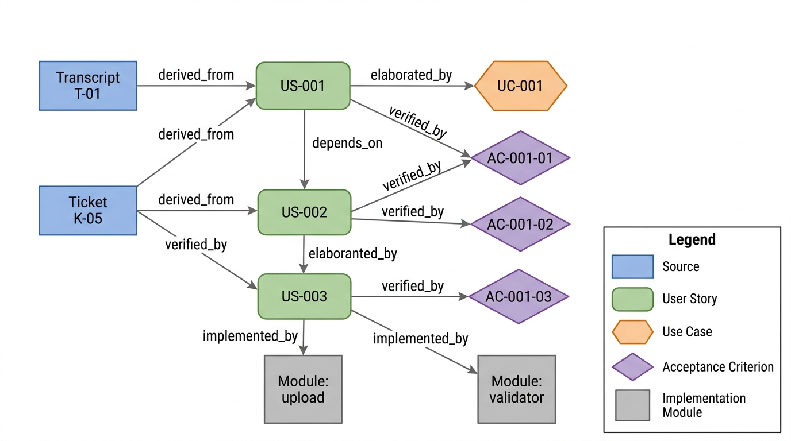

Prerequisites
This section opens the chapter. You should have read Chapter 9: Vibe Coding for the fundamentals of specification-driven development, and Chapter 1: Discovery as Search for the search framework \((S, A, T, f, C)\) that we apply to the requirements space. Familiarity with Python dataclasses or Pydantic models (introduced in Chapter 10) will help with the code examples.
Requirements engineering is the process of discovering, documenting, and validating what a software system should do. It is the bridge between human intent and machine behavior. This section introduces the three primary representations used in modern practice (user stories, use cases, and acceptance criteria), defines the quality attributes that separate good requirements from bad ones, and builds the data structures that the AI-assisted extraction pipeline in Section 13.2 will populate. Think of this section as defining the schema of the search space; the next two sections implement the search itself.
1. The Requirements Discovery Problem
Picture a research team that spent six months building a batch-processing pipeline, only to discover at the demo that the principal investigator wanted a simple weekly summary email. The stakeholder said "analyze my data"; the developers heard "build an orchestration engine." Six months of correct code, solving the wrong problem. This gap between what stakeholders say and what they actually need is the central challenge of requirements engineering: transforming raw, ambiguous human intent into structured artifacts that developers can implement and testers can verify.
Getting this transformation right has enormous consequences: according to widely cited industry estimates (Boehm and Basili, 2001), requirements defects discovered after deployment typically cost 10 to 200 times more to fix than those caught during specification. A structured approach to requirements discovery is not academic overhead; it is the cheapest insurance a project can buy.
To make this intuition precise, we can translate the discovery problem into the search framework from Chapter 1. Formally, we can model the requirements discovery problem as a search over the space of possible requirement sets. Let \(\mathcal{R}\) be the universe of all possible requirements for a system, and let \(R \subseteq \mathcal{R}\) be the "true" requirement set that would satisfy all stakeholder needs. We never observe \(R\) directly. Instead, we observe noisy signals: transcripts \(t_1, t_2, \ldots, t_n\) from stakeholder interviews, tickets \(k_1, k_2, \ldots, k_m\) from issue trackers, and documents \(d_1, d_2, \ldots, d_p\) from domain experts. Our goal is to reconstruct an approximation \(\hat{R}\) such that:
$$\hat{R} \approx R \quad \text{subject to} \quad \text{complete}(\hat{R}) \wedge \text{consistent}(\hat{R}) \wedge \text{testable}(\hat{R})$$The constraints (completeness, consistency, testability) are themselves hard to verify, making this a search problem with an imperfect objective function. AI assistance is well suited to this kind of problem: large language models (LLMs) process vastly more text than human analysts, catch patterns across hundreds of interviews, and flag inconsistencies that emerge only when comparing requirements from different stakeholders side by side. In short: requirements discovery is a search problem with a noisy objective function, and the quality of your search determines whether you build the right system or merely build a system right.
1b. Identifying Stakeholders
Before we can discover requirements, we must identify who has requirements.
A stakeholder is any person, group, or system that affects or is
affected by the software under development. In a scientific software project,
stakeholders typically include the principal investigator who funds the work,
the researchers who run experiments, the lab technicians who prepare samples,
the data engineers who maintain pipelines, the compliance officers who enforce
data governance, and the system administrators who keep infrastructure running.
Each role brings a distinct perspective: the PI cares about publication timelines,
the technician cares about sample throughput, and the compliance officer cares about
audit trails. Missing a stakeholder category during elicitation means missing an
entire class of requirements, a gap that no amount of careful story-writing can
compensate for later. The StakeholderRole enum in the next section
encodes these roles as structured data so that the extraction pipeline can verify
coverage across all known categories.
2. User Stories
A user story is a short, informal description of a feature told from the perspective of someone who wants it. The canonical format, popularized by Mike Cohn and the agile community, follows a three-part template:
A user story is a lightweight requirement artifact that captures a single unit of value from the end user's perspective in natural language rather than formal specification notation. It forces three questions that prevent miscommunication: who needs the feature, what they need, and why they need it. Brevity acts as a constraint: each story fits one sentence in a fixed template. This helps teams avoid the specification bloat of traditional Software Requirements Specifications (SRS) while retaining enough structure for prioritization and estimation. Use user stories when requirements evolve and stakeholder feedback cycles are short (typical of agile sprints). Prefer formal use cases or SRS documents when regulatory compliance demands detailed behavioral specifications with auditable pre- and postconditions.
The Three-Part Template
As a [role], I want [capability], so that [benefit].
The three parts serve distinct purposes. The role identifies which stakeholder benefits (and implicitly, which persona the tester should adopt during verification). The capability describes the desired behavior. The benefit explains why the capability matters, providing context for prioritization and design trade-offs. A user story without a benefit clause is a feature request with no justification; a story without a role is a solution looking for a problem.
Each user story carries a priority. The code below uses the MoSCoW scheme, which sorts requirements into four buckets: Must have (non-negotiable for launch), Should have (important but the system is usable without them), Could have (desirable if time permits), and Won't have this time (explicitly deferred). MoSCoW is widely used in agile projects because it forces stakeholders to make trade-off decisions rather than marking everything as "high priority." The following Pydantic models encode user stories as Python data structures. Pydantic provides automatic validation and JSON serialization, both essential when feeding requirements into LLM pipelines in Section 13.2.
from pydantic import BaseModel, Field
from enum import Enum
from typing import Optional
from datetime import datetime
class Priority(str, Enum):
"""MoSCoW prioritization scheme."""
MUST = "must"
SHOULD = "should"
COULD = "could"
WONT = "wont"
class StakeholderRole(str, Enum):
"""Common stakeholder roles in a scientific software project."""
RESEARCHER = "researcher"
LAB_TECHNICIAN = "lab_technician"
PI = "principal_investigator"
DATA_ENGINEER = "data_engineer"
COMPLIANCE_OFFICER = "compliance_officer"
SYSADMIN = "system_administrator"
class UserStory(BaseModel):
"""A user story in the standard 'As a / I want / So that' format."""
id: str = Field(description="Unique identifier, e.g., US-042")
role: StakeholderRole = Field(description="The stakeholder role")
capability: str = Field(
description="What the user wants to do",
min_length=10,
max_length=500,
)
benefit: str = Field(
description="Why the capability matters",
min_length=10,
max_length=500,
)
priority: Priority = Field(default=Priority.SHOULD)
source: str = Field(
description="Origin: transcript ID, ticket number, or document ref"
)
created_at: datetime = Field(default_factory=datetime.now)
tags: list[str] = Field(default_factory=list)
def to_sentence(self) -> str:
"""Render as a natural-language sentence."""
return (
f"As a {self.role.value.replace('_', ' ')}, "
f"I want {self.capability}, "
f"so that {self.benefit}."
)
# Example usage
story = UserStory(
id="US-001",
role=StakeholderRole.RESEARCHER,
capability="to upload a CSV of experimental results and see automated "
"quality checks run against predefined thresholds",
benefit="I can identify outliers before they propagate into downstream "
"analyses and waste a week of compute",
priority=Priority.MUST,
source="transcript-2024-03-15-PI-meeting",
tags=["data-quality", "upload", "validation"],
)
print(story.to_sentence())
# As a researcher, I want to upload a CSV of experimental results and see
# automated quality checks run against predefined thresholds, so that I can
# identify outliers before they propagate into downstream analyses and waste
# a week of compute.
min_length constraints prevent vague one-word capabilities and benefits.The INVEST criteria (Independent, Negotiable, Valuable, Estimable, Small, Testable) provide a checklist for evaluating user stories. We can encode these as automated validators:
import re
def check_invest(story: UserStory) -> dict[str, bool]:
"""Check a user story against the INVEST criteria.
Returns a dict mapping each criterion to pass/fail.
Not all criteria can be checked automatically;
those that require human judgment return True by default.
"""
checks = {}
# Testable: the benefit should imply a measurable outcome
measurable_keywords = [
"reduce", "increase", "faster", "fewer", "within",
"at least", "no more than", "before", "identify",
"detect", "prevent", "ensure", "verify",
]
checks["testable"] = any(
kw in story.benefit.lower() for kw in measurable_keywords
)
# Small: capability should be a single action, not a compound
compound_signals = [" and ", " also ", " additionally ", " plus "]
checks["small"] = not any(
sig in story.capability.lower() for sig in compound_signals
)
# Valuable: benefit must explain business or scientific value
checks["valuable"] = len(story.benefit) >= 20 # Non-trivial benefit
# Independent: checked at the set level (see traceability section)
checks["independent"] = True # Placeholder for set-level check
# Negotiable: has priority != MUST, or is tagged for discussion
checks["negotiable"] = (
story.priority != Priority.MUST
or "needs-discussion" in story.tags
)
# Estimable: capability is concrete enough to estimate
vague_terms = ["somehow", "various", "etc", "miscellaneous", "stuff"]
checks["estimable"] = not any(
term in story.capability.lower() for term in vague_terms
)
return checks
# Check our example story
results = check_invest(story)
for criterion, passed in results.items():
status = "PASS" if passed else "FAIL"
print(f" {criterion}: {status}")
# testable: PASS (benefit mentions "identify" and "propagate")
# small: PASS (single action: upload and see checks)
# valuable: PASS (benefit is 95 characters)
# independent: PASS
# negotiable: FAIL (MUST priority without needs-discussion tag)
# estimable: PASS
A user story is not a fact; it is a hypothesis about what will make a stakeholder's work better. Like any hypothesis, it should be testable (the "T" in INVEST), and it may be falsified when users interact with the implemented feature. This perspective, connecting requirements engineering to the scientific method from Chapter 2, explains why iterative discovery outperforms big-upfront specification: each iteration is an experiment that tests whether the requirement hypothesis holds.
3. Use Cases
Where user stories are deliberately brief (a few sentences on an index card), use cases provide a more detailed behavioral specification. A use case describes a sequence of interactions between an actor (user or external system) and the system under design, leading to a specific outcome. Use cases excel at capturing complex workflows with branching, error handling, and preconditions, situations where the user-story format becomes strained.
The essential elements of a use case are:
- Actor: who or what initiates the interaction.
- Preconditions: what must be true before the use case begins.
- Main success scenario: the step-by-step "happy path."
- Extensions: alternative flows for error conditions or branching.
- Postconditions: what must be true after the use case completes.
class UseCaseStep(BaseModel):
"""A single step in a use case scenario."""
step_number: int = Field(ge=1)
actor: str = Field(description="Who performs this step: user or system")
action: str = Field(description="What happens in this step")
class Extension(BaseModel):
"""An alternative flow branching from a main scenario step."""
at_step: int = Field(
description="The main-scenario step number where this branches"
)
condition: str = Field(description="When this extension activates")
steps: list[UseCaseStep] = Field(
description="The alternative sequence of steps"
)
class UseCase(BaseModel):
"""A structured use case with main scenario and extensions."""
id: str = Field(description="Unique identifier, e.g., UC-007")
title: str = Field(description="Short descriptive title")
actor: str = Field(description="Primary actor")
preconditions: list[str] = Field(
description="Conditions that must hold before execution"
)
main_scenario: list[UseCaseStep] = Field(
description="The main success scenario (happy path)",
min_length=2,
)
extensions: list[Extension] = Field(
default_factory=list,
description="Alternative flows for errors or branches",
)
postconditions: list[str] = Field(
description="Conditions guaranteed after successful execution"
)
related_stories: list[str] = Field(
default_factory=list,
description="IDs of user stories this use case elaborates",
)
# Example: a use case for the data upload story
upload_uc = UseCase(
id="UC-001",
title="Upload and Validate Experimental Results",
actor="Researcher",
preconditions=[
"Researcher is authenticated and has write access to the project",
"CSV file contains columns matching the project's data schema",
],
main_scenario=[
UseCaseStep(step_number=1, actor="Researcher",
action="Selects 'Upload Results' from the project dashboard"),
UseCaseStep(step_number=2, actor="System",
action="Displays file picker with accepted formats (CSV, TSV)"),
UseCaseStep(step_number=3, actor="Researcher",
action="Selects the CSV file and confirms upload"),
UseCaseStep(step_number=4, actor="System",
action="Parses CSV headers and validates against project schema"),
UseCaseStep(step_number=5, actor="System",
action="Runs quality checks: range validation, duplicate detection, "
"missing-value analysis"),
UseCaseStep(step_number=6, actor="System",
action="Displays validation report with flagged rows highlighted"),
UseCaseStep(step_number=7, actor="Researcher",
action="Reviews flagged rows and marks each as 'accept' or 'exclude'"),
UseCaseStep(step_number=8, actor="System",
action="Stores accepted rows in the project database with provenance metadata"),
],
extensions=[
Extension(
at_step=4,
condition="CSV headers do not match the project schema",
steps=[
UseCaseStep(step_number=1, actor="System",
action="Displays column-mapping interface with suggested matches"),
UseCaseStep(step_number=2, actor="Researcher",
action="Confirms or corrects column mappings"),
UseCaseStep(step_number=3, actor="System",
action="Re-validates with corrected mappings; returns to step 5"),
],
),
],
postconditions=[
"All accepted rows are stored with upload timestamp and user ID",
"Validation report is archived for audit trail",
"Downstream pipelines are notified of new data availability",
],
related_stories=["US-001"],
)
related_stories field creates a traceability link back to the originating user story.
A genomics startup building a variant-calling pipeline used user stories for
stakeholder communication ("As a bioinformatician, I want to filter variants by
quality score, so that I report only high-confidence calls") and use cases for
the regulatory submission to the Food and Drug Administration (FDA) ("UC-014: Variant Filtering and Quality
Assurance" with 12 main steps, 4 extensions, and formal pre/postconditions).
The user stories drove sprint planning; the use cases drove the validation
protocol. Both traced back to the same stakeholder interviews, connected through
the related_stories field. This dual-representation pattern is common
in regulated domains (medical devices, avionics, financial systems) where agile
velocity and compliance documentation must coexist.
4. Acceptance Criteria
Acceptance criteria bridge the gap between requirements and tests. Each criterion defines a specific, verifiable condition that must hold for a user story to be considered "done." The most popular format is Given/When/Then (GWT), borrowed from behavior-driven development (BDD):
Given [precondition], When [action], Then [expected result].
GWT criteria are powerful because they are simultaneously human-readable specifications and machine-executable test skeletons. Tools like pytest-bdd and Behave (Python libraries that execute Gherkin scenario files, where Gherkin is the structured Given/When/Then language for writing executable specifications) can parse GWT scenarios directly and bind them to test step implementations. This connection between requirements and tests is the core of the traceability story we build throughout this chapter.
class AcceptanceCriterion(BaseModel):
"""A single Given/When/Then acceptance criterion."""
id: str = Field(description="Unique identifier, e.g., AC-001-01")
story_id: str = Field(description="The user story this criterion belongs to")
given: str = Field(description="The precondition or initial state")
when: str = Field(description="The action or trigger")
then: str = Field(description="The expected outcome, must be verifiable")
def to_gherkin(self) -> str:
"""Render as a Gherkin scenario for BDD tools."""
return (
f"Scenario: {self.id}\n"
f" Given {self.given}\n"
f" When {self.when}\n"
f" Then {self.then}\n"
)
# Acceptance criteria for US-001
criteria = [
AcceptanceCriterion(
id="AC-001-01",
story_id="US-001",
given="a researcher has a CSV with 1000 rows and 3 rows "
"containing values outside the configured threshold range",
when="the researcher uploads the CSV to the project",
then="the system displays a validation report highlighting "
"exactly those 3 rows within 10 seconds",
),
AcceptanceCriterion(
id="AC-001-02",
story_id="US-001",
given="a researcher uploads a CSV with column headers that "
"do not match the project schema",
when="the system attempts schema validation",
then="the system displays a column-mapping interface suggesting "
"matches based on header similarity, and does not store "
"any data until the researcher confirms the mapping",
),
AcceptanceCriterion(
id="AC-001-03",
story_id="US-001",
given="a researcher has reviewed the validation report and "
"marked 2 rows as 'exclude'",
when="the researcher clicks 'Confirm Upload'",
then="exactly 998 rows are stored in the database, each tagged "
"with the upload timestamp, researcher ID, and source filename",
),
]
for ac in criteria:
print(ac.to_gherkin())
5. Quality Attributes of Good Requirements
Acceptance criteria pin down what "done" looks like for a single story, but how do we judge whether an entire set of requirements is ready for implementation?
The IEEE 29148 standard (the international standard for requirements engineering processes and products) defines several quality attributes that a well-formed requirement set must satisfy. These attributes are not optional aspirations; they are the criteria we use to evaluate whether our AI extraction pipeline (Section 13.2) is producing useful output.
Completeness: the requirement set covers all stakeholder needs. Formally, \(\hat{R}\) is complete if every element of the true requirement set \(R\) has a corresponding element in \(\hat{R}\). In practice, we measure completeness through coverage matrices: every stakeholder role has stories, every story has acceptance criteria, and every acceptance criterion has a test.
Common Misconception
Readers often assume that "completeness" means capturing every possible requirement before development begins, treating it as a gate that must be passed once. In practice, completeness is a moving target that improves incrementally across iterations; no upfront analysis phase, however thorough, will surface requirements that only emerge when users interact with a working prototype.
Consistency: no two requirements contradict each other. Requirement \(r_i\) is inconsistent with \(r_j\) if satisfying both simultaneously is impossible, that is, if \(r_i \wedge r_j \equiv \bot\). We model this formally as a satisfiability problem (determining whether any assignment of design choices can make all requirements true simultaneously) in Section 13.2.
Unambiguity: each requirement has exactly one interpretation. Ambiguous requirements contain words like "appropriate," "user-friendly," "fast," or "secure" without quantified definitions. An LLM can flag these terms automatically.
Checkpoint
So far: a well-formed requirement set must be complete (covering all stakeholder needs), consistent (free of contradictions), and unambiguous (each requirement having exactly one interpretation). The final attribute, testability, connects these properties to verification.
Testability: each requirement can be verified through a finite, cost-effective process. A requirement like "the system shall be reliable" is not testable because "reliable" has no operational definition. "The system shall achieve 99.9% uptime measured over any rolling 30-day window" is testable.
AMBIGUOUS_TERMS = {
"fast", "quick", "efficient", "user-friendly", "intuitive",
"appropriate", "reasonable", "adequate", "sufficient", "good",
"easy", "simple", "robust", "secure", "reliable", "scalable",
"flexible", "modern", "state-of-the-art", "seamless", "smart",
"real-time", "high-performance", "enterprise-grade",
}
def check_ambiguity(text: str) -> list[str]:
"""Find ambiguous terms in a requirement text.
Returns list of ambiguous terms found.
These terms need quantified definitions.
"""
words = set(text.lower().split())
# Also check bigrams for multi-word terms
bigrams = {
f"{w1} {w2}"
for w1, w2 in zip(text.lower().split(), text.lower().split()[1:])
}
all_tokens = words | bigrams
return sorted(all_tokens & AMBIGUOUS_TERMS)
def check_testability(criterion: AcceptanceCriterion) -> dict[str, bool]:
"""Check whether an acceptance criterion is testable.
Looks for quantified outcomes in the 'then' clause.
"""
then_text = criterion.then.lower()
has_quantity = bool(re.search(r'\d+', then_text))
has_time_bound = any(
term in then_text
for term in ["within", "seconds", "minutes", "before", "after"]
)
has_exact_outcome = any(
term in then_text
for term in ["exactly", "at least", "no more than", "at most",
"displays", "stores", "returns", "rejects"]
)
no_ambiguity = len(check_ambiguity(then_text)) == 0
return {
"has_quantity": has_quantity,
"has_time_bound": has_time_bound,
"has_exact_outcome": has_exact_outcome,
"no_ambiguity": no_ambiguity,
}
# Demonstrate on our acceptance criteria
for ac in criteria:
ambiguous = check_ambiguity(ac.then)
testable = check_testability(ac)
print(f"{ac.id}: ambiguous_terms={ambiguous}, testability={testable}")
# AC-001-01: ambiguous_terms=[], testability={'has_quantity': True,
# 'has_time_bound': True, 'has_exact_outcome': True, 'no_ambiguity': True}
If we think of requirements discovery as optimization (the search framework from Chapter 1), quality attributes become components of the loss function. Incompleteness is missed coverage, inconsistency is a constraint violation, ambiguity is entropy in the specification, and untestability is an unverifiable hypothesis. The AI extraction pipeline in Section 13.2 optimizes all four simultaneously, trading off recall (completeness) against precision (consistency and unambiguity).
6. The Traceability Matrix
Quality attributes tell us whether individual requirements are well-formed, but they say nothing about how those requirements connect to their origins, their tests, and their implementations.
A traceability matrix is a table (or, more usefully, a graph) that links every requirement to its origin (which stakeholder said it), its elaboration (which use case details it), its verification (which acceptance criteria test it), and its implementation (which code module realizes it). Traceability is not bureaucratic overhead; it is the infrastructure that lets you answer questions like "if this requirement changes, which tests break?" and "which stakeholder is affected if we cut this feature?"
Mental Model
Think of a traceability matrix as the wiring diagram behind a building's electrical panel. Each circuit breaker (user story) connects to specific outlets (acceptance criteria) in specific rooms (implementation modules), and every wire traces back to a labeled entry in the service panel (stakeholder source). When an outlet stops working, you do not test every wire in the building; you follow the diagram from that outlet back through its breaker to the source. Likewise, when a traceability link breaks (a requirement changes), you follow the graph edges forward to find exactly which tests and modules are affected, without auditing the entire system.
derived_from edges. Stories fan out to acceptance criteria (verified_by) and implementation modules (implemented_by). Dashed red edges flag potential conflicts between stories.As Figure 13.1 illustrates, the traceability matrix forms a layered directed graph where sources feed into stories, which fan out to acceptance criteria and implementation modules. We model this structure as a directed graph using NetworkX (a Python library for creating, manipulating, and analyzing graph data structures). Each node is a requirement artifact (story, use case, criterion, source, or implementation module), and each edge is a traceability link with a type label. Figure 13.1.1 illustrates traceability matrix as a directed graph.

import networkx as nx
from enum import Enum
class LinkType(str, Enum):
"""Types of traceability links between requirement artifacts."""
DERIVED_FROM = "derived_from" # Story <- Source
ELABORATED_BY = "elaborated_by" # Story -> UseCase
VERIFIED_BY = "verified_by" # Story -> AcceptanceCriterion
IMPLEMENTED_BY = "implemented_by" # Story -> CodeModule
CONFLICTS_WITH = "conflicts_with" # Story <-> Story (undirected)
DEPENDS_ON = "depends_on" # Story -> Story
class TraceabilityMatrix:
"""A graph-based traceability matrix for requirement artifacts."""
def __init__(self):
self.graph = nx.DiGraph()
def add_story(self, story: UserStory) -> None:
"""Add a user story node with its metadata."""
self.graph.add_node(
story.id,
type="user_story",
priority=story.priority.value,
role=story.role.value,
text=story.to_sentence(),
)
def add_source(self, source_id: str, description: str) -> None:
"""Add a source (transcript, ticket, document) node."""
self.graph.add_node(
source_id, type="source", description=description
)
def add_criterion(self, criterion: AcceptanceCriterion) -> None:
"""Add an acceptance criterion and link it to its story."""
self.graph.add_node(
criterion.id,
type="acceptance_criterion",
given=criterion.given,
when=criterion.when,
then=criterion.then,
)
self.graph.add_edge(
criterion.story_id,
criterion.id,
link_type=LinkType.VERIFIED_BY.value,
)
def link(self, from_id: str, to_id: str, link_type: LinkType) -> None:
"""Create a traceability link between two artifacts."""
self.graph.add_edge(
from_id, to_id, link_type=link_type.value
)
def coverage_report(self) -> dict[str, dict[str, int]]:
"""Compute coverage metrics for the requirement set.
Returns counts of linked artifacts per story.
"""
report = {}
for node, data in self.graph.nodes(data=True):
if data.get("type") != "user_story":
continue
successors = list(self.graph.successors(node))
predecessors = list(self.graph.predecessors(node))
report[node] = {
"sources": sum(
1 for p in predecessors
if self.graph.nodes[p].get("type") == "source"
),
"criteria": sum(
1 for s in successors
if self.graph.nodes[s].get("type") == "acceptance_criterion"
),
"implementations": sum(
1 for s in successors
if self.graph.edges[node, s].get("link_type")
== LinkType.IMPLEMENTED_BY.value
),
}
return report
def orphan_stories(self) -> list[str]:
"""Find stories with no source traceability (no derivation link)."""
orphans = []
for node, data in self.graph.nodes(data=True):
if data.get("type") != "user_story":
continue
has_source = any(
self.graph.nodes[p].get("type") == "source"
for p in self.graph.predecessors(node)
)
if not has_source:
orphans.append(node)
return orphans
def untested_stories(self) -> list[str]:
"""Find stories with no acceptance criteria."""
untested = []
for node, data in self.graph.nodes(data=True):
if data.get("type") != "user_story":
continue
has_criteria = any(
self.graph.nodes[s].get("type") == "acceptance_criterion"
for s in self.graph.successors(node)
)
if not has_criteria:
untested.append(node)
return untested
# Build the traceability matrix
matrix = TraceabilityMatrix()
# Add source
matrix.add_source(
"transcript-2024-03-15-PI-meeting",
"Weekly PI meeting discussing data upload workflow pain points"
)
# Add story and link to source
matrix.add_story(story)
matrix.link(
"transcript-2024-03-15-PI-meeting", "US-001",
LinkType.DERIVED_FROM
)
# Add acceptance criteria (auto-links to story)
for ac in criteria:
matrix.add_criterion(ac)
# Generate coverage report
report = matrix.coverage_report()
for story_id, counts in report.items():
print(f"{story_id}: {counts}")
# US-001: {'sources': 1, 'criteria': 3, 'implementations': 0}
# Check for problems
print(f"Orphan stories: {matrix.orphan_stories()}") # []
print(f"Untested stories: {matrix.untested_stories()}") # []
We built the traceability matrix from scratch using NetworkX to show the underlying graph structure. In production, Doorstop provides a complete requirements management system with YAML-based requirement files, automatic UID generation, traceability link validation, and HTML/PDF export. Doorstop handles versioning, change tracking, and multi-document link integrity that our 60-line implementation omits. The graph concepts are the same; Doorstop handles the engineering around persistence, concurrency, and reporting.
7. From Unstructured to Structured: The Extraction Challenge
The data structures in this section define the target of requirements discovery: validated user stories with acceptance criteria, connected through a traceability matrix to their sources. The input, however, is almost always unstructured: meeting transcripts full of tangents and interruptions, Jira tickets mixing bug reports with feature requests, email threads burying requirements in paragraphs of context, and Slack conversations where a critical constraint appears between a lunch order and a GIF.
The gap between unstructured input and structured output is where AI becomes transformative. A human analyst reading a one-hour transcript (roughly 8,000 words) might spend two to four hours extracting and cross-referencing requirements. An LLM can typically perform that initial extraction in seconds, collapsing hours of manual cross-referencing into a single API call, producing a draft the analyst refines. The role shifts from transcription to validation, a far better use of domain expertise.
The next section builds this extraction pipeline, using the Pydantic models defined here as the structured output schema for LLM-based extraction.
Beyond the rule-based ambiguity and testability checkers shown above, recent work
applies large language models directly to requirements quality assessment.
Fantechi et al. (2023, "Requirements Quality Research: A Harmonized Theory,
Evaluation, and Roadmap," Journal of Systems and Software) synthesize
decades of quality attribute research into a unified evaluation framework and
identify LLM-based detection of passive voice, coordination ambiguity, and
implicit cross-references as an open frontier. Building on this direction, the
PEAR benchmark (Kabir et al., 2024, "Is Ambiguity in Natural Language Requirements
a Blessing in Disguise?") provides 1,800 expert-annotated requirement sentences and
demonstrates that GPT-4-class models match trained human annotators on ambiguity
classification while surfacing subtle coordination and scope ambiguities that
keyword lists (like our AMBIGUOUS_TERMS set) systematically miss.
These results suggest a near-term path where the static checkers in this section
serve as fast pre-filters and an LLM pass handles the nuanced cases.
Try It: Build a Mini Traceability Matrix From a Real README
1. Pick any open-source project on GitHub that has a README with a "Features" or
"Goals" section (e.g., FastAPI, Streamlit, or DVC). Copy five feature descriptions
into a plain text file.
2. For each feature, write a UserStory using the Pydantic model from this
section. Assign roles (e.g., RESEARCHER, DATA_ENGINEER) and
MoSCoW priorities based on your reading of the project's documentation.
3. Write two AcceptanceCriterion entries in Given/When/Then format for your
highest-priority story. Run check_testability() on each and refine any
criterion that fails the quantity or exact-outcome checks.
4. Build a TraceabilityMatrix, add all five stories and your criteria, link
each story to its source (the README URL), and call coverage_report().
Identify which stories are "untested" (no criteria yet).
5. Run check_ambiguity() on each story's capability text. For every
ambiguous term found, rewrite the capability with a quantified replacement (e.g.,
replace "fast" with "responds within 200 milliseconds").
Exercises
- Conceptual: The INVEST criteria include "Independent," meaning each story should be implementable without depending on other stories. In practice, scientific software often has deep sequential dependencies (you cannot run the analysis pipeline before the data ingestion pipeline). How would you reconcile the independence criterion with genuine implementation dependencies? Propose a tagging scheme that distinguishes "logical independence" from "implementation ordering."
-
Coding: Extend the
UserStorymodel with anon_functional_attributesfield that captures performance, security, and availability constraints. Add a validator that checks whether any non-functional attribute contains ambiguous terms (using thecheck_ambiguityfunction) and raises a warning. Test with three stories: one with all quantified constraints, one with ambiguous constraints, and one with no non-functional attributes. - Analysis: The traceability matrix assumes a many-to-many relationship between stories and sources. What happens to the coverage report when a single transcript generates 50 user stories? Is the "orphan stories" metric still meaningful? Propose a weighted coverage metric that accounts for the ratio of stories to sources, penalizing single-source requirement clusters.
Exercise 13.1.1
A stakeholder says: "As a lab technician, I want the system to be fast and reliable,
so that I can process samples efficiently." Identify every quality violation in this
user story (ambiguity, testability, INVEST failures). Then rewrite the story so that
check_ambiguity() returns an empty list and check_invest()
passes all six criteria.
Hint
The words "fast," "reliable," and "efficiently" are all in the
AMBIGUOUS_TERMS set. Replace each with a quantified measure: a response
time in milliseconds, an uptime percentage over a defined window, and a concrete
throughput target (e.g., "process at least 200 samples per hour"). For the INVEST
"negotiable" criterion, either lower the priority from MUST or add a
"needs-discussion" tag.
Step-Through: Building a Traceability Matrix From Scratch
Trace through the TraceabilityMatrix construction with a minimal example
of two stories and one shared source.
Step 1: Call add_source("T-01", "Sprint planning transcript").
Graph state: 1 node (T-01, type=source), 0 edges.
Step 2: Call add_story(story_a) where story_a.id = "US-010".
Graph state: 2 nodes, 0 edges.
Step 3: Call link("T-01", "US-010", DERIVED_FROM).
Graph state: 2 nodes, 1 edge (T-01 -> US-010).
Step 4: Call add_story(story_b) where story_b.id = "US-011",
then link("T-01", "US-011", DERIVED_FROM).
Graph state: 3 nodes, 2 edges.
Step 5: Call add_criterion(ac) where ac.story_id = "US-010"
and ac.id = "AC-010-01".
Graph state: 4 nodes, 3 edges (the method auto-creates the US-010 -> AC-010-01 edge).
Step 6: Call coverage_report(). Result:
{"US-010": {"sources": 1, "criteria": 1, "implementations": 0}, "US-011": {"sources": 1, "criteria": 0, "implementations": 0}}.
Step 7: Call untested_stories(). Returns ["US-011"] because
US-011 has no acceptance criteria linked to it.
Real-World Application: NASA's Orion Spacecraft
NASA's Orion Multi-Purpose Crew Vehicle program reportedly maintains over 3,000 traceable requirements in the DOORS (Dynamic Object-Oriented Requirements System) database (as of 2024, IBM Engineering Requirements Management DOORS Next has largely replaced the classic DOORS client across many aerospace programs), linking each requirement from its origin in mission objectives through verification procedures to test reports. When a thermal protection requirement changed after Exploration Flight Test 1 in 2014, engineers queried the traceability graph to identify exactly which 47 downstream test procedures and 12 design documents needed updates, completing the impact analysis in days rather than the weeks a manual audit would have required.
The \$300 Million Ambiguous Requirement
In 1999, the Mars Climate Orbiter disintegrated because one team specified thruster
impulse in pound-force seconds while another team read the same requirement as
newton-seconds. The requirement document said "total impulse" without specifying
units: a textbook ambiguity violation. A single call to check_ambiguity()
would not have caught it (the words were domain-specific, not generically vague),
but a formal postcondition on the acceptance criterion requiring "value in SI units
with explicit unit annotation" would have surfaced the mismatch during integration
testing rather than 286 million miles from Earth.
Lab: Automated Requirements Quality Scoring
Goal: Measure how well real-world requirements satisfy quality
attributes by scoring a public requirements dataset.
Tools: Python 3.10+, Pydantic, the check_ambiguity() and
check_testability() functions from this section, and the PURE dataset
(Public Requirements Dataset, available at
zenodo.org/record/1414117), which
contains 370 requirements from 11 industrial projects.
Setup (15 min): Download the dataset, parse each requirement into a
UserStory (use "system user" as the role and infer capability/benefit
from the text). Run check_ambiguity() on every requirement and tally how
many contain at least one ambiguous term.
What to vary: Expand or shrink the AMBIGUOUS_TERMS set.
Add domain-specific vague terms (e.g., "appropriate resolution" in imaging
requirements). Remove terms that are actually precise in context (e.g., "real-time"
in an embedded systems project with a defined latency budget).
What to observe: How does the ambiguity detection rate change? At what
threshold does the detector become too noisy (flagging precise terms) versus too
lenient (missing genuinely vague language)? Plot precision vs. recall if you
hand-label 50 requirements as truly ambiguous or not.
What's Next
With the target data structures defined and quality validators in place, Section 13.2: AI-Assisted Requirement Extraction builds the pipeline that populates them. The pipeline extracts user stories from raw transcripts using LLMs, clusters related requirements with embeddings, and detects conflicts by modeling requirement dependencies as a constraint satisfaction problem over the traceability graph.